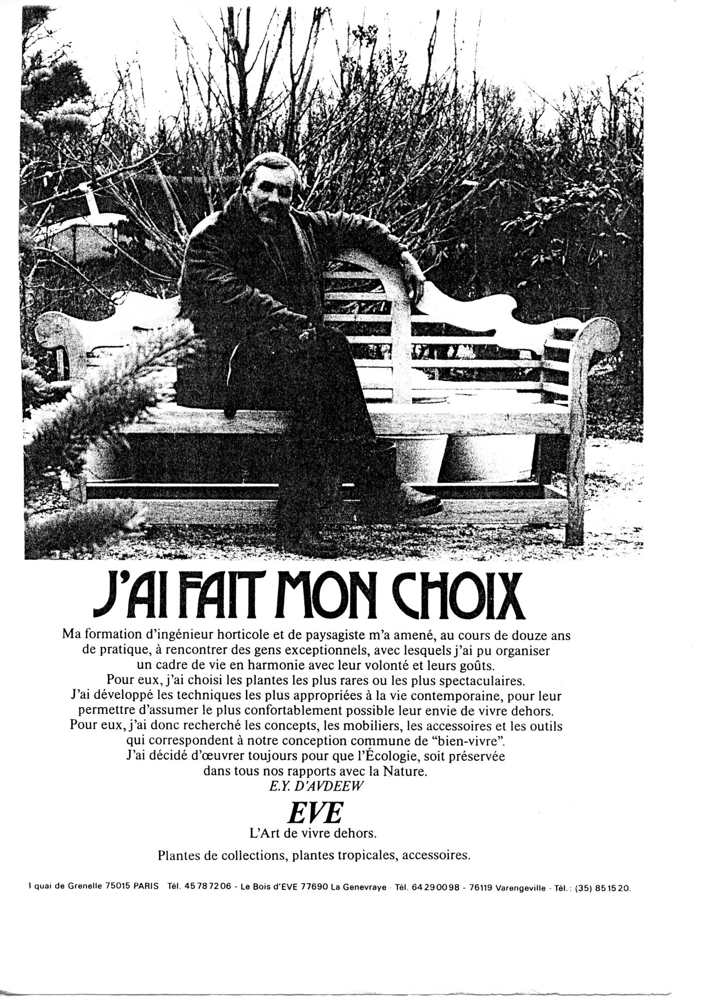

| Edouard d'Avdeew (Ingénieur Horticole - Paysagiste*)
face à la politique écologique en France - (interview réalisée en 1990 par John Gelder) |
La misère du patrimoine végétal en France (1990) "...la pollution nucléaire est ou absolue ou inexistante, selon le côté où l'on se place : il n'est pas contestable que s'il y a d'autres accidents tels que Tchnernobyl, quoi que l'on fasse, on sera anéanti."
"...car, quoi qu'il advienne, on n'arrivera jamais à détruire intégralement le monde végétal, mais avant, c'est vrai, en le détruisant suffisamment, on risque de se détruire soi-même, ce qui n'est pas la même chose !"
Edouard, en 1969, coopérant à Abidjan, architecte payagiste de Cocody/
|
|
LA
MISÈRE DU PATRIMOINE VÉGÉTAL
EN FRANCE II
n'y a pas en France d'interlocuteur intellectuellement et
professionnellement
valable dans 1'aménagement de l'environnement, Cet
aménagement est fait au
coup par coup, soit par des gens dont la compétence est
contestable, soit par
des gens qui sont des prestataires de services pour des grands groupes
financiers et qui ne se soucient pas de détruire un
environnement quel qu'il
soit. Pour
renverser cette tendance, la formation des jeunes est fondamentale ;
plus tard ce seront
eux les prescripteurs, Et si on ne fait pas en sorte qu'il soient
capable de
l'être rapidement, il ne faudra pas venir se plaindre de
1'environnement qu'on
aura. ON
N'ENSEIGNE PLUS DE BOTANIQUE Dans les autres pays on a respecté l'environnement beaucoup plus qu'en France, En France nous sommes des latins, dans le mauvais sens du terme,, des latins destructeurs, On croit qu'une cage à poule vaut mieux qu'une jolie forêt. On n'explique pas qu'une forêt a besoin d'un minimum d'espace pour être viable, Une autoroute doit être construite, on coupe la forêt en deux. On veut aménager des habitations, on tronque inconsidérément la forêt, On ne se soucie pas du devenir du monde végétal en France, En aucun cas, Autrefois on s'en préoccupait, au siècle dernier, mais maintenant on ne s'en soucie plus, Cela est dû à plusieurs raisons, Des raisons politiques, des raisons économiques, considérations - qu'on le veuille ou pas - courtes, de courte vue et à court terme, Il suffit d'ller en Angleterrre pour constater qu'une ville n'est pas forcément l'équivalent de destruction de ses éléments naturels... Mais il y a d'autres mauvaises
raisons, qui deviennent de plus en plus
flagrantes ; on n'apprend plus de botanique dans aucune
école en France, Que ce
soit à Versailles où on ne fait plus ou
très peu de botanique, ou bien que ce
soit dans les universités, où les cours de
botanique ont été quasiment tous
supprimés les uns après les autres, Et comme il
n'y a plus de cours de
botanique, il n'y a plus de connaissance botanique, il n'y a donc plus
de
vulgarisation de végétaux. POURQUOI ? Parce
que depuis quelques décennies les Ministères
successifs d'Education Nationale
considèrent qu'il vaut mieux former des
électroniciens. Cela se justifie
jusqu'à un certain point, compte tenu du retard pris en
France sur le plan de
la formation professionnelle. Il était évident
qu'il valait mieux former des
ingénieurs électroniciens ou des
mathématiciens que des botanistes. Mais
aujourd'hui on souffre de manière dramatique du manque de
"professionnels" de la botanique en France. L'ENVIRONNEMENT,
UN LUXE ? Au
contraire. L'environnement végétal existait avant
nous. Mais vous avez raison,
si on continue tel qu'on le fait actuellement, tel qu'on le
détruit, en effet,
les trois arbres qui resteront, ce sera un luxe ! Que constatons-nous ?
On
fabrique des cages à poules en rasant les forêts,
on construit des bâtiments
parce que le terrain y est moins cher. Actuellement on obtient des
dérogations,
par exemple, dans le domaine des permis de construction de golfs ; il y
a aujourd'hui
une espèce de folie des golfs, non pas parce que les gens
veulent jouer au
golf, mais parce que si on construit un golf on déroge au
permis de construire,
Moyennant quoi, sans permis, on y érige des club-houses
et un certain nombre de bâtiments, toujours sans permis de
construire, Cela, c'est
malheureux à dire, les Français le comprennent
tout de suite : l'argent qu'ils
peuvent faire sur l'environnement, Mais ce n'est pas pour
protéger
l'environnement, ce n'est pas pour favoriser le
développement du golf, c'est
uniquement parce qu'ils s'aperçoivent qu'il y a de l'argent
à gagner. IL Y
A-T-IL UNE POLITIQUE DE
L'ENVIRONNEMENT VEGÉTAL EN FRANCE AUJOURD'HUI ? La
politique de l'environnement se veut une politique
d'écologistes,
Or, les écologistes ne respectent pas forcément
l'environnement, Les écologistes
prétendent lutter pour l'amélioration de
l'environnement,
Je dis bien
prétendent, Mais leur lutte se plaçant
prioritairement sur un
pian politique,
ou politicien; je ne crois pas qu'ils "regardent" un arbre et se
soucient d'un arbre. Ils se soucient des voix qu'ils vont obtenir mais
pas du végétal. S'ils se souciaient un peu plus
des
végétaux, ils participeraient
depuis longtemps à des manifestations pour les
protéger,
Ils protègent
l'environnement contre la pollution industrielle, oui, ils
protègent l'environnement
contre les pollutions nucléaires - ce qui est
déjà
contestables, à mon avis,
parce que la pollution nucléaire est ou absolue ou
inexistante,
selon le côté où l'on se place : il
n'est pas
contestable que s'il y a d'autres accidents tel que Tchnernobyl, quoi que l'on
fasse, on
sera anéanti, En
réalité, l'expérience le montrera ou
non, la pollution
d'une centrale nucléaire n'est pas épouvantable,
mais a condition de prendre un
maximum de précautions au bon fonctionnement et de
pallier I'incurie
humaine. Contrairement
à certaines actions des verts allemands, je n'ai jamais
entendu Monsieur Waechter
parler de végétaux, Jamais ! Je ne l'ai
jamais entendu parler de la
médiocrité de notre environnement
végétal urbain, du manque d'oxygène,
du
problème de la taille sauvage des arbres à Paris,
Ou alors, je i'ai
mal écouté. Jusqu'à
présent, je n'ai rien
vu de
positif sortir de l'action des verts en France. Peut-être
s'attaquent-ils à des
problèmes de structure, je l'espère, mais sur le
plan
concret, c'est-ˆ-dire sur
le plan de notre environnement direct, je ne vois pas grand chose ; je
n'ai pas
entendu de proposition de loi émanant des verts, obligeant
à une certaine densité ce plantation par rapport
à
une certaine densité de construction, ou des
propositions propres, justement, à améliorer la
qualité de vie de nos
concitoyens, Je ne les ai jamais entendu parier de ça : ou
alors, de
façon
tellement confidentielle qu'il n'y a qu'eux qui soient au courant... On
peut être atterré par la destruction
systématique consécutive à
l'aménagement
des villes. Cela ne correspond à aucune logique. Il suffit
d'aller en Angleterre pour constater qu'une ville n'est pas
forcément
l'équivalent de la destruction de ses
éléments naturels, En France, chaque fois
que l'on construit une ville on détruit la
nature.
En Angleterre on la sauvegarde, Là-bas, si un arbre se
trouve placé LA
FRANCE N'AIMERAIT-ELLE PAS LES
ARBRES ? Non,
parce qu'il parait que les arbres tuent ! Les arbres se
précipitent sur les pauvres
voitures qui roulent à 150 à l'heure sur les
routes (départementales ou non) et
tuent les automobilistes ! J'ai lu de semblables âneries :
les arbres tuent. Il
faut donc les couper ! Les routes nationales qui étaient
bordées d'arbres, qui
avaient du charme, qui protégeaient du soleil ou du vent ont
été détruits parce
les arbres tuent ..
, PRISE
DE CONSCIENCE CONTRE LES
VŒUX PIEUX La
priorité des priorités est de faire prendre
conscience aux jeunes de ce
problème, parce que ce sont eux qui demain
géreront le pays, Respecter une
forme de vie qu'est le végétal constitue une
manière de civisme, Et tant que l'on
vivra en se moquant des valeurs civiques et des valeurs morales - et
cette
société en est malheureusement un exemple sur
tous les plans - (la politique
est souvent corrompue, l'économie
cède très facilement aux sirènes du
profit "marchand ", aucune solution
ne sera trouvée, Je crois que si les jeunes
étaient
conscients que c 'est une
valeur civique et une valeur morale que de respecter un
élément vivant comme un
végétal, ou comme
un chien, ou même un être humain... Eh bien, si un
tel
civisme les portait, nous courrions moins de risques, Or, cette prise
de
conscience, aujourd'hui, elle n'existe pas. Ce
n'est pas, en effet, avec trois personnes soucieuses du
végétal, ou de quoi que
ce soit d'ailleurs, qu'on peut remuer un pays et rompre ce carcan de
conventions
et d'immobilisme, Il faut être des milliers et
particulièrement des milliers de
jeunes, C'est à eux ce montrer aux parents qu'on ne bute pas
un arbre avec un
pare-choc, qu'on peut rouler un peu moins vite sur les routes si on n'a
pas
envie de se jeter contre un arbre, C'est aux jeunes de modifier ces
raisonnements fallacieux qui font dire qu'on ne peut pas planter nos
avenues
sous peine que les arbres se précipitent sur vous et qu'il
vaut donc mieux les
arracher, Et quantités d'éléments
semblables. Parce que les arguments fallacieux,
les idées à courte vue sont partout, pour les
voitures, pour l'industrie ; ce sont toujours de très bon
prétextes, de très
bonnes excuses pour sacrifier l'environnement, Mais ce ne sont que ces
prétextes et des excuses. SCIENCE
SANS CONSCIENCE : UN
PROBLÈME DE SOCIETE La
sauvegarde du patrimoine végétal est donc un
problème d'esprit civique, Un
problème de conscience, "Science sans conscience n'est que
ruine
de
l'âme", disait Rabelais. Rien n'est plus actuel et vrai. On
ne
peut
continuer à faire de la science au mépris ou
monde
vivant, ce l'environnement
vivant qui existait avant nous qui plus est, et donc devrait avoir
priorité. En
France, ce discours est encore considéré comme
rétrograde, parce qu'il est
beaucoup plus sympathique aux oreilles des Français de
parler de
revendications
salariales, de revalorisation des revenus pour les uns et pour les
autres,
c'est tout à fait ce qui nous harcèle
à longueur
de journée ; parler de
l'environnement, être extraverti et parler des arbres qui,
eux,
ne parlent pas, ça paraît énorme. Et
pourtant ce qui
est énorme c'est d'en si peu
parler !
LES
BUDGETS, LES PROJETS D'ESPACES
VERTS NE MANQUENT PAS Ce
qui est fâcheux dans notre pays, c'est qu'on semble donner
une prime aux gens
vénaux. Quand on propose des choses simples et utiles, sans
souci financier,
sans souci personnel, on n'est pas crédible, on n'est pas
suivi. Soi-disant
parce que ce n'est pas "vendeur". Parce que les arbres ça ne
fait
pas un tabac !... Donc, un
vrai projet de sauvegarde du
Patrimoine végétal ne peut réussir que
s'il y a une prise de conscience
individuelle. Je
vais donner un exemple que j'ai vécu enfant. Pourquoi me
suis-je intéressé aux
végétaux depuis
l'âge le plus tendre ? Parce que
j'avais la chance d'avoir eu des instituteurs, puis des professeurs
amoureux
des plantes. Ils passaient leur jeudi (jeudi à
l'époque
était jour de congé) à nous emmener en
train, dans
des conditions difficiles, parce que prendre le
train pour aller à Ville d'Avray
ou à Garches dans le
but d'aller voir des plantes, pour des petits banlieusards dont
j'étais, était
exceptionnel, c'était du rêve ! Je crois
que si un certain nombre de
professeurs de sciences naturelles - s'il en existe encore -, prenaient
sur eux
même d'être de bons éducateurs,
d'emmener leurs élèves voir des
végétaux
autrement qu'aux Jardin des Plantes, où ils sont mourants, et leur montraient la nature dans toute sa
conception, c'est-à-dire le
monde animal et minéral associé aux
végétaux, ou encore des endroits peu
pollués ou naturels tels certains sites de la
forêt de Fontainebleau ou de
celle de Rambouillet, petit à petit, puis très
vite on créerait une émulation
et très vite également les jeunes
s'intéresseraient de nouveau au monde
végétal. UNIFORMITÉ
DES RÉGIONS On
peut aller du Nord au Sud, de l'Est à l'Ouest de la France,
il y a un mimétisme
dans le mauvais sens du terme qui fait – à
quelques rares exceptions près
– que le jardin du Sud ressemble à celui du Nord
qui ressemble à son tour
au jardin de l'Ouest qui ressemble à celui de l'Est.
C'est-ˆ-dire qu'on trouye
des Thuyas pupra dans
le midi, on les retrouvera en Bretagne et ailleurs. Les maisons
s'uniformisent,
le végétal suit. Bientôt on aura beau
aller en
Alsace, on ne verra plus ni
l'habitat alsacien, ni les paysages de conifères
caractéristiques de
l'Alsace ; on ira en Bretagne et on ne trouvera, à
part
chez quelques
privilégiés, plus les plantes natives ou capables
de
pousser en Bretagne. Dans
le midi le problème est identique ; les haies de
thuyas ont
remplacé les
haies de Cyprès, pour des raisons diverses, des raisons de
maladie
certes, mais surtout
parce que des thuyas, ça pousse plus vite, parce que c'est
plus facile
à planter, parce que ça coéte moins
cher, en argent, en
imagination. Le
Sud-ouest, quant à lui, est un cas étrange, il
est
étrange, en effet, il est étonnant qu'on ne
trouve
quasiment pas de jardin de Bordeaux jusqu'à Bayonne,
alors qu'il règne là un climat relativement
privilégié, idéal pour les jardins,
Pourtant il n'y là pas de jardins ! CARENCE
PAYSAGISTE
Le
problème du paysage en France est un problème
crucial, La plupart des jeunes
sortant de Versailles et, particulièrement sortant du
Paysage, et qui sont
ensuite lancé sur le marché, qui travaillent dans
des ateliers de paysagistes
ou chez des architectes, ne connaissent pas les
végétaux, Il en résulte que
très rapidement les architectes s'en sont aperçus, les décideurs
s'en sont aperçus et la réaction a
été ; on
confie tel espace vert à un architecte ou on le confie
à un bureau étranger
plutôt qu'à un paysagiste. Malheureusement c'est
comme ça que ça se passe. Exemple
"anecdotique" mais révélateur de cette carence,
Une propriétaire,
boulevard Foch, possède un petit jardin en
façade, une centaine de M2, Il y a
un arbre. La propriétaire fait venir un paysagiste,
Elle est curieuse - ce
qui est bien - de savoir quel est l'arbre qui orne son jardin. Elle le
lui demande,
Le paysagiste lui dit ; "Madame, c'est un cercis", Cercis,
c'est l'arbre de Judée, il possède une petite
feuille caractéristique ronde,
floraison rose au printemps, Ce qui fait la particularité de
l'arbre de Judée,
c'est que les branches conservent les gousses sèches des
fruits, Vraiment c'est
un arbre qu'on ne peut confondre avec aucun autre, Eh bien, en fait,
c'était un
abricotier ! Le client était surpris parce que je lui ai dit
que c'était un
abricotier, mais comme auparavant quelqu'un lui a dit que
c'était un arbre de
Judée, elle a dû penser, à juste titre,
" l'autre ne le sait certainement
pas plus que le premier". Elle a été surprise de
voir des fleurs et ces
abricots sur son arbre, C'est
quand même dramatique que des paysagistes
diplômés
se rendent sur un chantier
et font table rase des choses, Il est inadmissible qu'on n'observe pas
un
minimum d'identification et de "respect" pour ce qui est des
végétaux, Comment veut-on que ces gens fassent le
travail
préliminaire s'ils ne
sont pas capable de reconnaître trois plantes, et particulier
un cercis
et un abricotier, Cet exemple, qui
est
extrême, n'est hélas pas exceptionnel. Alors,
pour simplifier on rase. C'est beaucoup plus facile, On rase tous les
végétaux
et on replante des choses qu'on connaît, En d'autre mots, pas
grand chose. On
prend des trames standards et on replante les
végétaux déjà
utilisés
précédemment, et ainsi de suite. Sans faire de
recherche, ni de climat ni de
sol ni de végétal rare capable d'être
planté dans tel ou tel endroit. Cette
raison affligeante explique la banalité de la plupart des
plantations. On peut multiplier les exemples. La carence paysagère est toujours là. Dans telle propriété importante un paysagiste de notoriété intervient. Les végétaux l'ennuient. Il s'est pourtant soucié, d'une façon très efficace et d'ailleurs remarquable de faire tout l'aménagement du pied de maison, sans manquer d'idées et d'originalité. Or, tout le reste du jardin qui ne l'intéressait pas, il le fait remplir au moyen de plantes de bords d'autoroutes. Petit à petit, nous avons été amenés à enlever une par une ces plantes dites de remplissage. Le paysagiste avait une excuse : se protéger des voisins. Mais il aurait pris un végétal intéressant, il aurait obtenu le même effet. Généralement on se soucie ainsi de l'immédiat, pour le reste on plante vraiment le tout-venant, par lignes, par séries sans chercher la moindre originalité. Cela prouve toujours la même chose ; les gens n'aiment - ou ne connaissent - pas assez les végétaux pour faire jusqu'au bout une démarche qualitative. Manifestement les professionnels ne connaissent pas assez les végétaux. Et, par conséquent, les amateurs, les propriétaires de jardins ou les particuliers ne les connaissent pas plus. Et tout cela parce qu'on n'apprend plus la botanique dans les écoles de paysage, on ne l'apprend plus dans les universités ni dans l'enseignement secondaire et primaire. On fabrique des gens qui passent à côté des végétaux, qui ne les voient pas. Créer
des postes de paysagistes est une chose tout a fait
intéressante. Mais si on
crée des postes de paysagistes sans créer une
structure
pour les former, cela
ne servira à rien. II y a quelques années, il y
avait une
mode et une
vogue : les villes nouvelles. Beaucoup de nos
collègues
d'alors ont pris
des postes - au sortir de leur promotion - dans des bureaux
d'études pour ces
villes nouvelles, Je peux vous affirmer que la plupart des
études et des
projets, du travail énorme qui a été
fait pour
l'aménagement des villes
nouvelles, a été foulé aux pieds et,
bien entendu,
respecté en aucun cas. Encore une fois, la
responsabilité
des ministères successifs de l'Éducation
nationale a
joué ici un mauvais rôle ; non sans raisons
sans
doute, on considère qu'il vaut mieux former des
ingénieurs électroniciens, des
mathématiciens que
des botaniste ; priorités industrielles obligent... Oui,
tout
ce travail - travail de mise en situation des bâtiments, des
espaces verts - a été détruit, pour
des raisons
diverses : financières, faisabilité,
opportunités
politiques. Donc, il ne s'agit pas de créer uniquement des
postes de
paysagistes. Il faut encore qu'on les écoute - donc qu'ils
soient compétents
(c'est tout le sens de la réforme indispensable des
structures
de formation) et
qu'ils deviennent de vrais interlocuteurs ayant un pouvoir,
plutôt que d'être
de mauvais interlocuteurs faisant le jeu du ou des pouvoirs. LE
MILIEU PROFESSIONNEL EN AVAL Il manque à ce
milieu une solide connaissance de base, Et c'est pour cette raison
qu'il existe
toujours cette injonction infernale ;
le client - particulier ou entreprise - demande un
végétal, le
pépiniériste répond qu'il ne le
cultive pas parce qu'on ne le demande pas.
C'est-à-dire chacun se rejette la responsabilité.
Donc le paysagiste dit, je ne
n'ai pas proposé ce végétal parce
qu'on ne le trouve pas et le pépiniériste
dit, je ne le cultive pas parce qu'on ne me le propose pas. Il faut rapidement briser ce cercle
vicieux, Comment ? Par l'enseignement la recherche en botanique, en
horticulture, en physiologie végétale, en
écologie appliquée
et en création de jardin et paysages, [Une association
comme SAVE pouvait et devait jouer ce rôle, en permettant
à chacun de
s'exprimer, de fournir des cas d'espèces et de proposer des
solutions nouvelles] DÉTRUIRE LES PREJUGÉS OU DÉTRUIRE LA PLANÈTE ? C'est
le problème, celui de l'éducation d'abord
– plus
généralement celui de
l'information. La sensibilité doit intervenir depuis
l'enfance,
à partir des
premiers éveils de l'enfant, Si l'enfant a un professeur qui
l'emmène voir des
bêtes, qui l'emmène voir des plantes ou qui
1'emmène dans une ferme (il en
reste quelques unes) il ne dira pas des choses énormes sur
la
nature, Comme par
exemple que le lait ça vient des bouteilles. Vous interrogez
des
enfants et ils
vous diront que le lait ça vient des bouteilles et que les
Ïufs
sont fabriqués
en usine, Demain se contenteront-ils de croire que les
bébés sont fabriqués en
éprouvettes ? Cela
prouve que science n'est pas connaissance et encore moins
conscience. Le travail à faire est donc énorme. Le
végétal mangeur d'oxygène dans
l'habitat : Voilà
un autre préjugé qui a la vie dure (notamment en
milieu
hospitalier); les
plantes mangent l'oxygène de l'atmosphère et sont
donc
néfastes pour la santé
dans un lieu fermé ! C'est quand même effrayant
d'entendre
dire des choses
pareilles. Les adultes le disent, donc les enfants le croient, On ne
leur
apprend pas en quoi consiste la fonction principale du
végétal. Alors pour les
enfants le végétai n'a pas la moindre importance,
il
n'est que gênant, Il faut
ramasser les feuilles, c'est tout ce qu'ils voient. Ils n'imaginent pas
que le végétal participe essentiellement
à notre
atmosphère et que s'il n'y avait pas
de végétaux, on n'existerait pas. Parce que ce
sont
justement les végétaux qui
fabriquent l'oxygène, ce n'est pas nous ! Nous, nous en
consommons. Donc le respect de notre devenir
passe
précisément par le respect intelligent des
végétaux. Sinon on ne pourra bientôt
plus respirer. S'il n'existait pas une masse
végétale suffisamment
importante il n'y aura plus d'oxygène sur la terre. Et le
problème de l'Amazonie en
est une illustration dramatique.
Evidemment les Brésiliens s'en moquent ! Nous, on
a fait pareil il y a des siècles, On a détruit
notre forêt primaire, alors on
est mal placépour donner des conseils aux autres. On est mal
venu de leur
dire de
ne pas détruire leur
forêt primaire puisque nous nous sommes enrichis
grâce à elle.
Il
n'en reste pas moins que si on
détruit la forêt d'Amazonie, qui est une
réserve
fondamentale, on détruira
totalement l'équilibre de la planète. Sur une
quantitéde plans ; sur le plan
de l'eau potable, sur le pian de l'oxygène, sur le plan de
l'équilibre de notre écosystème
planétaire,
bien sér. Cela, personne ne veut sérieusement
l'envisager, pourtant c'est comme ça, Et nous ne pourrons
pas nous y
opposer.
Même si le Brésil décide de raser toute
sa
forêt pour y planter du mais ou y
extraire des minéraux, nous ne
pourrons, hélas,
pas nous y opposer... FAIRE
PEUR ? Il
ne s'agit pas de faire peur, il s'agit de s'informer. Si on ne sait pas
à quoi
sert un "arbre", si on ne sait pas comment il fabrique de
l'oxygène, on ne le respecte pas. On ne peut pas respecter
ni comprendre les
choses que l'on ne connaît pas, C'est
par la connaissance que vient le respect, donc la survie. Certains végétaux ont une telle activité, une telle intensité de photogenèse qu'ils enrichissent considérablement l'atmosphère ambiante en oxygène, Ils sont alors un peu comme un stimulus, un dopant, l'équivalent en quelque sorte d'un masque a oxygène à l'hôpital. L'idée qu'une plante peut avoir une influence sur le climat uniquement par son pouvoir de photosynthèse, on ne l'imagine pas, Exemple des peupleraies dans le Nord de la France ; froides, brumeuses, brouillardeuses, parce que les peupliers ont un effet de photosynthèse intensive et abaissent la température ambiante, créant cette espèce de brume et de zone froide, Si on n'apprend pas ça - et d'autres choses - aux gens, comment comprendraient-ils quoi que ce soit des actions habituelles aussi élémentaires à la vie, Pour ma part, j'ai beaucoup plus confiance dans la propagation intelligente et dynamique de la connaissance que dans le brandissement de menaces et dans la peur. Ce n'est pas la peur mais la connaissance qu'il faut développer. Il faut faire savoir que la plupart des hormones ont été découvertes chez les végétaux, également les hormones qui nous concernent nous, les humains. C'est un milieu vivant fondamental, qui peut nous apporter des milliers de choses si on le respecte. Et si on ne le respecte pas, alors oui, nous disparaîtrons avant lui, car lui retrouvera sa force après notre disparition. Car, quoi qu'il advienne, on n'arrivera jamais à détruire intégralement le monde végétal, mais avant, c'est vrai, en le détruisant suffisamment, on risque de se détruire soi-même, ce qui n'est pas la même chose !  E. d'Avdeew en 1988. (Phto M. Waxmann) - I : Audio rencontre membres de SAVE à Courson vers 1990 http://www.dailymotion.com/video/xosbh0_itw-edouard-d-avdeew-part-1_news ITW Edouard D'avdeew part 1 par alteritefilm 2 - Interview audio cf ; ci-dessus.` http://www.dailymotion.com/video/xosgts_itw-d-edouard-d-avdeew-part-2_news ITW d'Edouard D'avdeew part 2 par alteritefilm * ÉDOUARD D'AVDEEW : Ingénieur Horticole-Paysagiste 1944 - 1992) Président de SAVE (Association pour la sauvegarde du Patrimoine végétal en France (1988 - 1992) |
{kind=link}